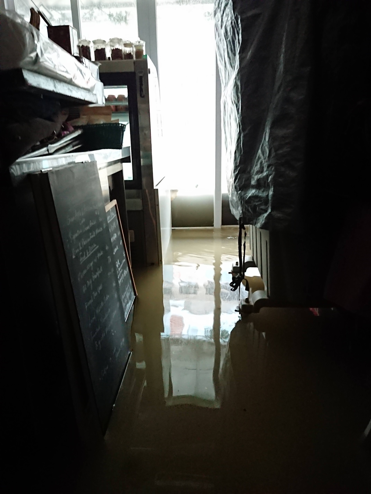

Tweet
When Typhoon Hato hit Hong Kong last year, it was fortunate that the casualties were low when compared with neighboring cities. Yet, Hong Kong is prone to climate change. With the further rise of the sea-level, coastal flooding would become more frequent.
Hong Kong, with a coastline of 733 km, is vulnerable to the coastal flooding brought by the rising sea levels alongside the climate change. With an expected rise in sea level and its volume of waters under the continued rise of greenhouse gases in the future, there will be more devastating storm surge brought by tropical cyclones, according to a climate projection study by the Hong Kong Observatory.
According to the study, the frequency of storm surge will increase from one in fifty years to one in five years by 2021- 2040, and eventually an annual event at the end of the 21st century as the sea levels rise by 1.7m more.
A sea level of 3.5 m can already cause a severe flooding in low-lying areas of the city. Several typhoons in the past had brought severe storm surges to Hong Kong causing casualties and heavy property damages. If the sea level rise projections become true, the casualties and damages will beyond our imagination.
1 / 5
Heng Fa Chuen Car Park submerged in the water. Photo: Michael Ho.
2 / 5

Clifford Wong Chun-kit's cafe was flooded during the Typhoon Hato. Photo: Clifford Wong.
3 / 5

Water-safety barrier put outside the cafe fell down during the storm. Photo: Clifford Wong.
4 / 5

Firemen standed by to save the trapped residents. Photo: Clifford Wong.
5 / 5

Residents of Tai O cleaning up the flooded properties on streets after the storm. Photo: Clifford Wong.